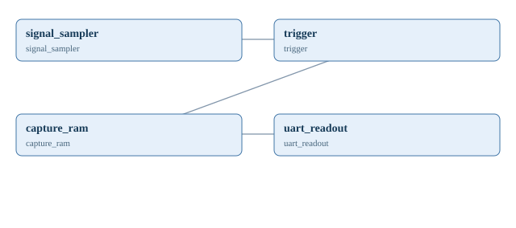

mert137/An-FPGA-Based-Oscilloscope
참고 원본
https://github.com/mert137/An-FPGA-Based-Oscilloscope
Source tree SHA: 67da0cd616e5bca8295d47b97c81a768ece69aab
라이선스: MIT / review_for_reuse
자동 생성한 설계 구상도 (미검증)
These names and connections are educational architecture proposals, not verified upstream source modules or physical wires.

| 제안 IP | 개념 입력 | 개념 출력 |
|---|---|---|
| signal_sampler | out_data | |
| trigger | in_data | out_data |
| capture_ram | in_data | out_data |
| uart_readout | in_data |
진행 상태
대상 보드 미선정 / 원본 포팅 미실시 / RTL 미생성 / 회로 배선 및 보드 검증 미실시